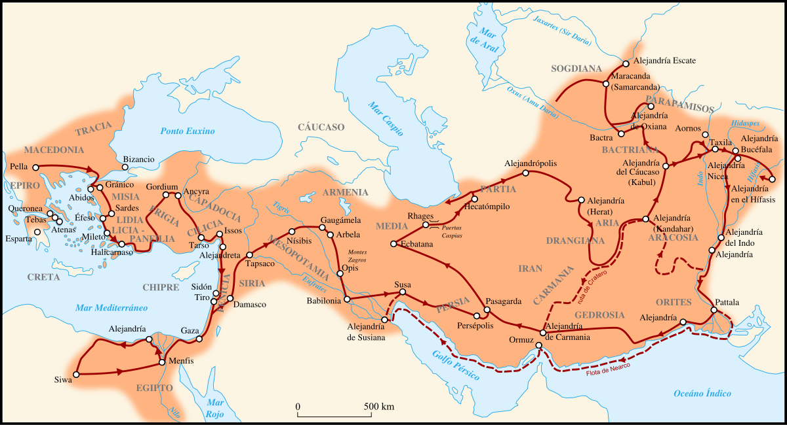
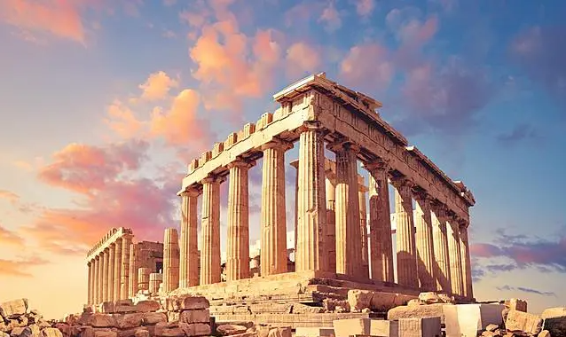
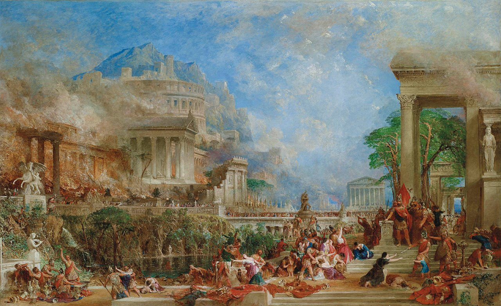

Despues de la muerte del Magno
comenzó tras la muerte de Alejandro Magno y marcó una nueva etapa en la historia de Grecia. Durante este tiempo, la cultura griega se expandió y se fusionó con las tradiciones de Egipto, Persia y otras regiones conquistadas, dando lugar a una civilización cosmopolita y diversa.
La Expansión del Imperio de Alejandro Magno
Alejandro Magno, tras unificar Grecia bajo su mando, emprendió una de las campañas militares más notables de la historia, conquistando el vasto Imperio Persa, Egipto y llegando hasta los territorios del noroeste de la India. Durante su avance, fundó numerosas ciudades —como Alejandría— y promovió activamente la difusión de la cultura griega, dando inicio al periodo helenístico, en el que Oriente y Occidente comenzaron a mezclarse culturalmente. A su muerte en el año 323 a.C. en Babilonia, sin un heredero claro, su imperio fue dividido entre sus generales, conocidos como los diádocos, lo que marcó el fin de la unidad imperial pero el comienzo de una nueva era de influencia griega en gran parte del mundo antiguo.

La Cultura Helenística: Fusión de Tradiciones
Tras la muerte de Alejandro Magno en 323 a.C., su vasto imperio se fragmentó entre sus generales (los diádocos), pero la huella cultural de sus conquistas perduró. Así comenzó la época helenística, un período caracterizado por la expansión y transformación de la cultura griega al mezclarse con las tradiciones orientales de Egipto, Persia, Mesopotamia e incluso la India. Este fenómeno dio lugar a una nueva cultura híbrida, conocida como cultura helenística, que se extendió por el Mediterráneo oriental y gran parte de Asia.
Características principales de la cultura helenística:
- El griego se convirtió en la lengua común para el comercio, la administración y la cultura en todo el mundo helenístico.
- Dioses griegos se identificaron con divinidades locales (como Serapis en Egipto).
- Se crearon nuevas formas religiosas, mezclando mitologías y prácticas orientales con el pensamiento griego.
- Alejandro fundó más de 20 ciudades llamadas Alejandría, siendo la más famosa la de Egipto.
- Estas ciudades se convirtieron en centros de conocimiento, comercio y mezcla étnica.
- En Alejandría, se fundó la Biblioteca de Alejandría, el mayor centro de estudio del mundo antiguo.
- Destacaron figuras como Euclides (matemáticas), Arquímedes (física), Eratóstenes (geografía), y Hiparco (astronomía).
- Filosofías como el estoicismo y el epicureísmo ganaron fuerza, ofreciendo respuestas al individuo en un mundo cambiante.
- El arte helenístico mostró emociones humanas intensas y situaciones cotidianas.
- Esculturas como la Venus de Milo o el Laocoonte reflejan esta sensibilidad.
- En la literatura, se desarrollaron géneros como la novela y la poesía bucólica.
Importancia histórica:
La cultura helenística representó un paso hacia una civilización más globalizada, donde el intercambio de conocimientos, religiones, costumbres y tecnologías dio forma a un mundo más conectado. Aunque los reinos helenísticos cayeron uno a uno ante Roma (culminando en 31 a.C. con la conquista de Egipto por parte de Octavio), sus ideas sobrevivieron e influyeron profundamente en el Imperio Romano y en la cultura occidental posterior.
La Decadencia y la Conquista Romana del Mundo Helenístico
Tras la muerte de Alejandro Magno en 323 a.C., su imperio se fragmentó en varios reinos gobernados por sus generales, como el Reino Ptolemaico en Egipto, el Seleúcida en Asia, y el Antigónida en Macedonia. Aunque estos reinos mantuvieron viva la cultura helenística, comenzaron a debilitarse por guerras internas, conflictos sucesorios, corrupción política y presión externa. Mientras tanto, una nueva potencia emergía en Occidente: Roma, que primero se consolidó en Italia y luego expandió su influencia hacia el Mediterráneo oriental. Aprovechando las divisiones del mundo helenístico, Roma intervino en conflictos locales y fue sometiendo uno a uno los reinos griegos: Macedonia cayó en 168 a.C., Grecia fue anexionada en 146 a.C. tras la destrucción de Corinto, y finalmente Egipto se convirtió en provincia romana en el 31 a.C., tras la derrota de Cleopatra y Marco Antonio en la batalla de Accio frente a Octavio (futuro emperador Augusto). Con estas conquistas, Roma no solo dominó militarmente el mundo helenístico, sino que también adoptó y preservó muchos elementos de su cultura, filosofía, arte y ciencia, integrándolos en su propia civilización y asegurando su legado en la historia de Occidente.

Lo mas destacado
La época helenística fue una etapa clave en la historia antigua donde, gracias a las conquistas de Alejandro Magno, se produjo una profunda fusión entre la cultura griega y las tradiciones de Oriente, dando origen a una civilización más diversa, cosmopolita y avanzada. Los principales hallazgos de este periodo incluyen la expansión del griego como lengua común, el florecimiento del pensamiento filosófico, avances notables en la ciencia, la medicina, las matemáticas y la astronomía, así como una nueva sensibilidad en el arte, la religión y la literatura. Las ciudades helenísticas, especialmente Alejandría, se convirtieron en centros de saber que influyeron por siglos. Sin embargo, la debilidad política y las rivalidades internas facilitaron la expansión de Roma, que terminó absorbiendo los reinos helenísticos. A pesar de su conquista, la cultura helenística no desapareció, sino que fue integrada por Roma y transmitida al mundo occidental, convirtiéndose en uno de los legados culturales más duraderos de la Antigüedad.